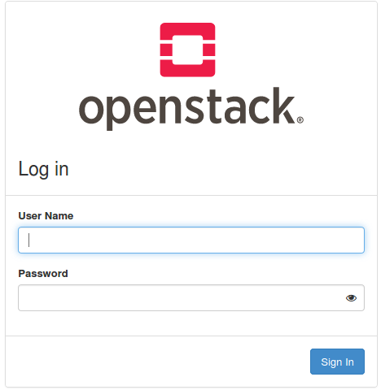
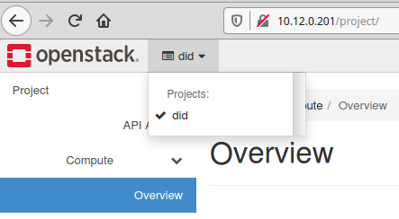
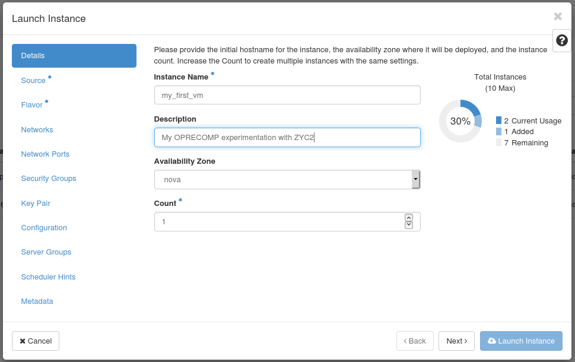
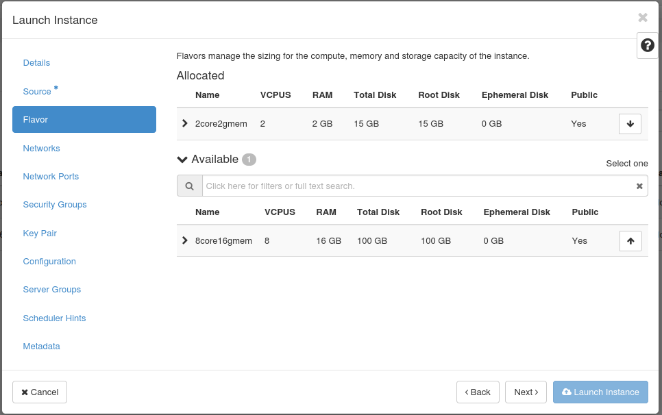
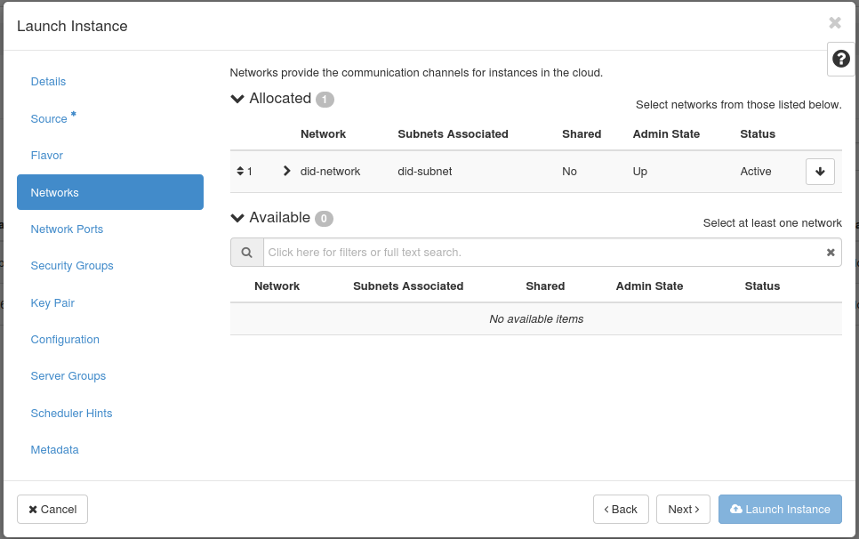
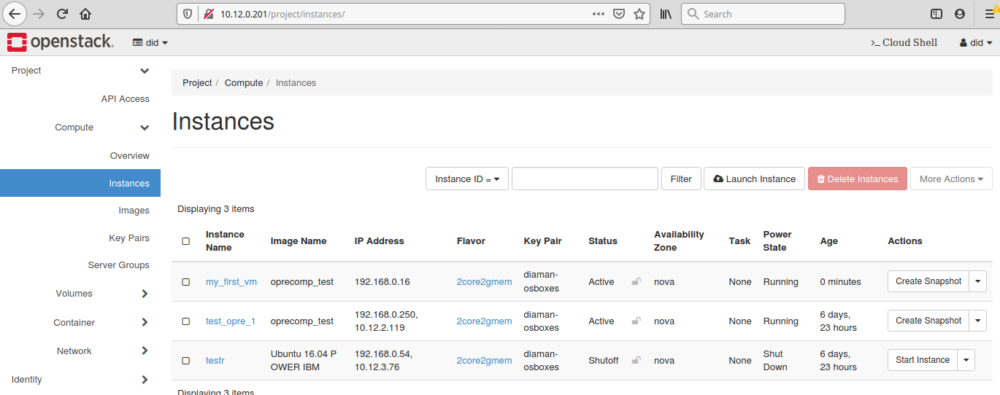
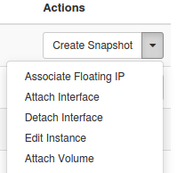
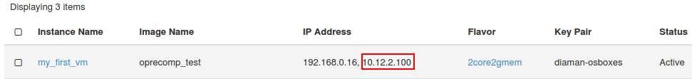
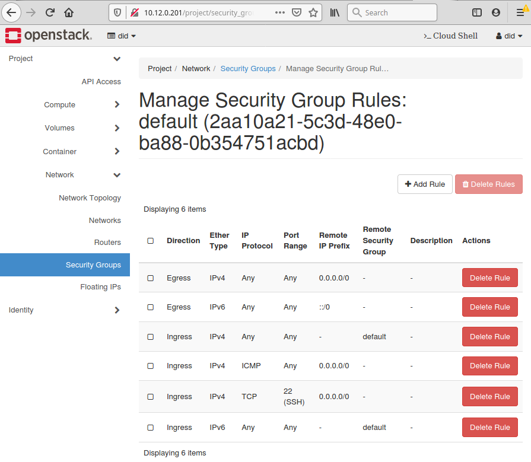

cloudFPGA on-prem¶
Currently cloudFPGA project can be accessed over cloud as an on-prem deployment to Zurich Heterogeneous Cloud, in the Yellow Zone security zone (ZYC2).
cloudFPGA on ZYC2¶
Throughout the following steps we will establish a connection on ZYC2 with cloudFPGA support.
Connecting to ZYC2¶
In order to use the ZYC2 infrastructure you will need to connect to it via a VPN client. You should have received anOpenVPN configuration file together with your ZYC2 credentials upon registration.
Warning
The OpenVPN client must be version 2.4 or later
Linux
On most Linux distributions you can either import the OpenVPN configuration file to the Network Manager or use the file directly with the openvpn client.
Windows
On Windows you can download the OpenVPN client software (Windows Installer) from here. After installation you can launch the OpenVPN GUI and a small tray icon should appear. If you right click on it you can select “Import file…” and navigate to the ZYC2 OpenVPN configuration file. After successful import, the connection should appear in the menu. When you click connect you will be prompted a username and password. These are the credentials provided in the registration email.
Getting started with OpenStack¶
ZYC2 runs OpenStack to provide an Infrastructure-as-a-Service cloud. This means you can create your own virtual networks and machines.
Login¶
The main point of interaction is the OpenStack Dashboard which can be reached via http://10.12.0.100/
You can login using you ZYC2 credentials.
Dashboard¶
After successful login you are presented an overview of your current project resource usage

Projects¶
On the top left of the dashboard you can see the project you currently work with. If you click on it a drop-down list will appear of all projects, you are a member of. All members of a project can see and modify the virtual infrastructure of the project. A project also has its own resource limits. You will always be a member of your own project which is named as your username.
Networks¶
An important aspect of the infrastructure is the network. In OpenStack you may create multiple private networks that belong to your project. Think of them as your “home network”. After creation of your network you may add virtual machines to it. All machines on the same network can communicate with each other.
The network configuration has already been established by ZYC2, so that your private network and the VMs connected to that can communicate with the outside world. Verify that you have a similar topology to the following.

Note
In the previous image two VMs have already been connected to the private network (orange line) and through a virtual router they can access web (blue line). Verify that you have such configuration.
Compute¶
Details¶
To create a virtual machine, navigate to Compute and then Instances. This gives you an overview of the current virtual machines in your project. You can click on Launch instance to create a new VM. When the wizard pops up, give the instance a name and click next.
Source¶
Next you can select the image you want the VM to run. Click on the arrow on the right to select the image you want to run.
To select a clean Ubuntu 16.04 installation use the image “Ubuntu 16.04 POWER IBM”.
To select an Ubuntu 16.04 installation preconfigured with transprecision libraries select in the “Select Boot Source” the option “Instance Snapshot” and then from the available options use the snapshot “oprecomp_test”.
Note
In both image options please make sure that the option “Create New Volume” is set to “No” (else the VM creation may hang).
Flavor¶
Now we can select a flavor of the virtual machine, meaning how many CPUs, memory and disk space it should have.
Network¶
Next we can select which network we want this VM to connect to. You should already have available your <username>-network.
Key Pair¶
All provided images use public key authentication for accessing the VMs. A public key is injected during launch of an instance. Under Key Pairyou need to add (or generate) the key you want to use.
Either import you existing public keys or create a new one through the panel.

Verify new VM¶
Then you should be able to view your new VM on the dashboard. It may take some time to spawn it depending on the load of the management service and the requested resources.
Associate floating IP¶
As a last step before you launch you new VM you should associate a public floating IP so that you can ssh to it. In the “Actions” panel select “Associate Floating IP”.
Then click the “+” symbol to add an IP and click the “Allocate IP”.

Now the floating IP will also appear in the list of your instances. This is the IP you can use to communicate with your VM.
Security Groups¶
A last but important step is to adjust or review the security group rules associated with the VM. At VM creation you can select which security group to apply. In our case this was the default security group as it is the only one. Navigate to Network -> Security Groups and select the group to review or modify. By default, the rules are very restrictive. Click on Add Rule and add any service (tcp/udp port) that you want to access over internal or external network. ICMP and SSH rules are already added to the default security group. This allow you to ping the VMs and use ssh for communication.
Accessing VMs¶
There are two ways of accessing your virtual machines:
One is through the Console interface of the OpenStack dashboard.

2. The other is by using SSH and potentially tunneling a VNC session over it. You can ssh to it with the username “ubuntu”, e.g.
ssh ubuntu@10.12.2.100
To use the graphical VNC session you must enable port forwarding with a command similar as follows:
ssh -L 5901:localhost:5901 -N -f -l ubuntu 10.12.2.100
This will forward port 5901 from/to your localhost. You can then connect to your localhost:5901 using your favorite VNC client.